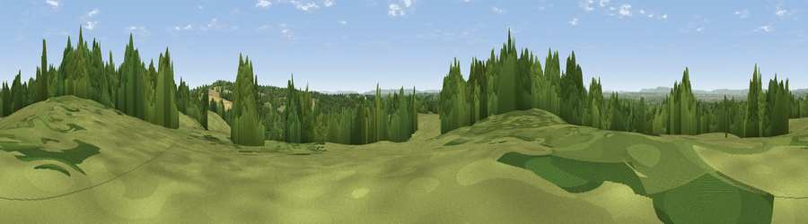

Viewpoint near Turners Hill
#35295 in England · top 43% of its area beats it · near Turners HillWhere it is
The exact computed spot (TQ 32675 34925). Click the marker for map links.
The view, rendered

A 360° render of this exact spot computed from the terrain model, tree cover and land cover — summer colours, afternoon light, calibrated against photographs of famous viewpoints. Real trees, hedges and buildings will differ in detail.
The panorama
Grey silhouette: terrain skyline in each direction (720 bearings, Earth curvature and refraction included). Dashed green: skyline with trees (+15 m) and buildings (+8 m) as obstacles. Blue strip: how far the ground is visible on each bearing.
Where the view opens
Wedge length = distance to the farthest visible ground on that bearing (vegetation-aware). Rings at 10, 25 and 50 km.
What fills the view
51% woodland · 38% grassland · 7% cropland · 3% built-up
Angular shares of the visible panorama (visual magnitude), not map area. Landscape diversity 0.45 (0–1 Shannon).
Key numbers
More beautiful places nearby
The staircase of upgrades: each row has a higher view potential than everything closer. Driving times are estimates from straight-line distance, calibrated against real road routing — check an actual route before setting out.
| Place | Direction | Drive | Score |
|---|---|---|---|
| Viewpoint near Turners Hill | SW · 1 km | ~2 min | 37.5 |
| Viewpoint near Turners Hill | ENE · 2 km | ~5 min | 47.7 |
| Viewpoint near Upper Hartfield | ESE · 15 km | ~26 min | 59.6 |
| Viewpoint near Chaldon | N · 19 km | ~32 min | 60.2 |
| Viewpoint near Lower Kingswood | NNW · 19 km | ~33 min | 67.7 |
| Viewpoint near Coldharbour | WNW · 20 km | ~34 min | 70.0 |
| Wolstonbury Hill | SSW · 21 km | ~36 min | 79.6 |
| Viewpoint near Westmeston | S · 22 km | ~36 min | 81.1 |
51.09829, -0.10658 · source: screening · position refined by local search. Computed location — check access rights before visiting.